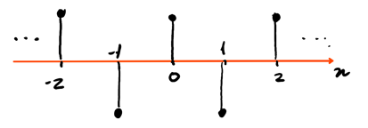
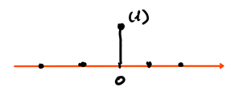
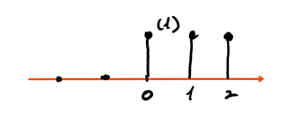

Vectors and Signals
Table of Contents
1. Signals
1.1. Continuous-Time Signals
Continuous-time (CT) signals are signals \(x: \mathbb{R} \rightarrow \mathbb{R}\) or \(x: \mathbb{R} \rightarrow \mathbb{C}\) that take a continuous set as the domain. For example, \(\left[ \mathbb{R} \rightarrow \mathbb{R} \right]\) is the set of all real functions (signals) of a real variable, and \(\left[ \mathbb{R} \rightarrow \mathbb{C} \right]\) is the set of all complex signals of a real variable.
1.2. Discrete-Time Signals
Discrete-time (DT) signals, on the other hand, are signals \(x: \mathbb{Z} \rightarrow \mathbb{R}\) or \(x: \mathbb{Z} \rightarrow \mathbb{C}\) that take a discrete set as the domain. We use \(x[n]\) to denote the value of a DT signal at a particular time (note the brackets, as opposed to parantheses for CT signals). We use a plot like the following for DT signals:

In this case, this is a plot of the function \(x[n] = \cos(\pi n)\).
1.3. Kronecker Delta
The Kronecker delta signal, also known as the discrete-time impulse, is a signal that is only 1 at zero:
\begin{align} \delta [n] = \begin{cases} 1 & n = 0 \\ 0 & n \neq 0 \\ \end{cases} \end{align}The plot for this is:

1.4. Unit Step
The DT unit step signal is a signal that is zero at negative values, and ones otherwise:
\begin{align} u[n] = \begin{cases} 0 & n < 0 \\ 1 & n \geq 0 \\ \end{cases} \end{align}The plot for this is:

1.5. Signal Shift
Signals can be either delayed:
\begin{align} \hat{\delta}[n] = \delta[n-1] \notag \end{align}or advanced:
\begin{align} \tilde{\delta}[n] = \delta[n+1] \notag \end{align}Note that non-integer shifts of a DT signal is meaningless since DT signals only have integer domains. Using the Kronecker delta, signal shifts, and scaling, any DT signal can be represented.
2. Vector Spaces
Sets that satisfy a set of basic axioms are called vector spaces, which can be categorized as either closure axioms, vector addition axioms, or scalar multiplication axioms.
2.1. Closure Axioms
2.1.1. Closure under Vector Addition
For every \(x, y \in \mathcal{V}\), there is a unique element (vector) \(z \in \mathcal{V}\) called the "sum of \(x\) and \(y\)" denoted by \(z = x + y\).
2.1.2. Closure under Scalar Multiplication
For every \(x \in \mathcal{V}\) and \(\alpha \in \mathbb{R}\) (or \(\mathbb{C}\)), there is a unique \(z \in \mathcal{V}\) such that \(z = \alpha x\).
2.2. Vector Addition Axioms
2.2.1. Commutativity of Addition
For every \(x, y \in \mathcal{V}\), we have \(x + y = y + x\).
2.2.2. Associativity of Addition
For every \(x, y, z \in \mathcal{V}\), we have \(x + (y + z) = (x + y) + z\).
2.2.3. Existence of Additive Identity
There exists a zero \(0 \in \mathcal{V}\) such that for every \(x \in \mathcal{V}\), \(x + 0 = x\).
2.2.4. Existence of a Negative
For every \(x \in \mathcal{V}\), the element \((-1)x\) or \(-x\) exists such that \(x + (-1)x=0\).
2.3. Scalar Multiplication Axioms
2.3.1. Associativity of Scalar Multiplication
For every \(x \in \mathcal{V}\) and \(\alpha, \beta \in \mathbb{R}\), \(\alpha (\beta x) = (\alpha \beta) x\).
2.3.2. Distributivity of Scalar Multiplication over Vector Addition
For every \(x, y \in \mathcal{V}\) and \(\alpha \in \mathbb{R}\), \(\alpha(x + y) = \alpha x + \alpha y\).
2.3.3. Distributivity over Scalar Addition
For every \(x \in \mathcal{V}\) and \(\alpha, \beta \in \mathbb{R}\), \((\alpha + \beta)x = \alpha x + \beta x\).
2.3.4. Existence of Multiplicative Identity
For every \(x \in \mathcal{V}\), we have \(1x = x\), \(1 \in \mathbb{R}\).
2.4. Subspaces
A subspace is a subset \(\mathcal{S}\) of a vector space \(\mathcal{V}\) that is itself a vector space. To test that a space is a vector space, it is sufficient to just show that:
- \(0\) is an element of \(\mathcal{S}\)
- \(\mathcal{S}\) is closed under vector addition
- \(\mathcal{S}\) is closed under scalar multiplication